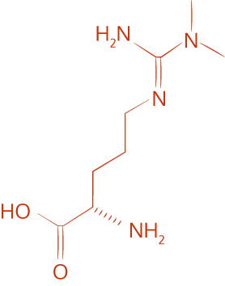

Mark Haykowsky (left), Paul Fadel (center), and David Keller (right) are researching to improve cardiovascular health.
In 2015, Paul Fadel, previously at the University of Missouri School of Medicine, also joined UTA as a professor of kinesiology and director of clinical translational science for the University. R. Matthew Brothers, formerly an assistant professor at The University of Texas Austin at Austin, also became a new associate professor of kinesiology in 2015. Their work in exercise physiology and neural cardiovascular control fits well with that of David Keller, chair of the kinesiology department and an associate dean in the College.
Dr. Keller’s Cardiovascular Physiology Laboratory studies the workings of a vital cardiovascular control called baroreflex function.
For Haykowsky, interest in cardiovascular health stems from his early training as a nurse and exercise scientist. His two decades of research have focused on improving outcomes for people with heart failure, a condition that affects 5.1 million in the United States, according to the Centers for Disease Control and Prevention.
Exercising Impacts
Heart failure occurs when changes in the size of the heart mean it “either doesn’t receive enough blood or it doesn’t pump out enough blood,” Haykowsky says. “It leads to a cascade of events. The body tries to protect itself, but in doing so, over time, it really becomes dysfunctional and ultimately leads to death.”
In addition to changes in the heart’s shape, exercise intolerance is a fundamental feature of heart failure. Patients experience shortness of breath and fatigue from simple activities like putting on a shirt. Obesity, high blood pressure, and a sedentary lifestyle are risk factors.
Haykowsky’s work centers on a type of heart failure that accounts for about half of the cases. It is called “heart failure with preserved ejection fraction,” or HFPEF. In those cases, heart muscles are thickened, and the heart doesn’t receive or, consequently, pump enough blood. It affects mostly older women.
Current treatments don’t improve survival in individuals with HFPEF. Haykowsky’s research is looking at whether factors beyond the heart—such as blood vessels, blood flow, and the muscles themselves—could be limiting exercise tolerance in HFPEF.
“When hearts become enlarged and damaged, it’s very hard to reverse them.
They don’t come back to normal.”
“When hearts become enlarged and damaged, it’s very hard to reverse them. They don’t come back to normal. But what we can improve is everything away from the heart,” Haykowsky says.
He also is researching how an earlier-than-typical start to exercise rehabilitation for heart attack patients may speed rehabilitation time and improve long-term survival. Making activity a part of daily life is essential because the best predictor of lifespan is fitness, Haykowsky says.
“We know a lot of the benefits of exercise unequivocally, but in diseased groups or people at risk for disease, we need to target our therapy. We can’t just say, ‘Exercise is exercise,’” he says.
Exploring Relationships
Dr. Fadel also focuses on patients diagnosed with disease, but not necessarily those conditions typically associated with the heart. He is exploring how an overactive sympathetic nervous system impacts the health of people with diagnoses including kidney disease and diabetes. The sympathetic nervous system regulates blood flow and blood pressure through a system of involuntary neural cardiovascular controls.
“You’re going to be worse off in any condition with an overactive sympathetic nervous system,” says Fadel, who has earned funding from the American Heart Association and the National Institutes of Health (NIH). “It has deleterious consequences on the heart. It has deleterious consequences on the kidney and deleterious consequences on your blood vessels. It affects almost all systems, and when it’s hyperactive, it’s all a negative. A lot of our research is directed at trying to identify why it becomes hyperactive. Can we find the mechanism by which that occurs? The idea is to identify therapeutic targets.”

Asymmetric Dimethylarginine
ADMA may play a role in the overactivity of the sympathetic nervous system in chronic kidney disease patients.
Fadel is studying how asymmetric dimethylarginine, or ADMA, a compound naturally produced by the body, may play a role in the overactivity of the sympathetic nervous system in chronic kidney disease patients. His research at UTA also will explore whether an overactive sympathetic nervous system could explain limitations in the ability of blood vessels to respond to insulin properly and whether it contributes to impaired glucose uptake in type 2 diabetes patients.
Fadel said the College’s 2014 merger of nursing and kinesiology is a natural fit for patient-based research like his.
“To perform these studies you need a fair amount of collaboration within the lab and nurses are a key part of this. I think it’s also a great environment for students to learn. Not just from the kinesiology side but from the nursing side as well,” he says.
Identifying Interventions
Heading off disease also is a goal for Keller and Dr. Brothers.
Keller, who received his undergraduate degree from UTA and returned to the University in 2007, studies the arterial baroreflex, the primary short-term regulator of blood pressure, and how it may relate to an increased incidence of hypertension and strokes for African-Americans.
With funding from the NIH, Keller showed that otherwise-healthy African-American men had a blunted ability to reflexively adjust their heart rates in response to short-term hypertension. He wants to know if those “moment-to-moment differences” influence a path to disease and what role those differences play after disease develops.
Keller and Fadel recently received approval on a further NIH grant to explore whether neural control of the heart or of the vasculature system is to blame for the differences.
“All racial groups, certainly in this country, demonstrate a degree of prevalence of hypertension to some extent. Understanding why one population is at such a higher risk for it can be good for everybody in terms of the understanding,” says Keller.
Brothers is also trying to learn more about why some groups may be more prone to cardiovascular disease. He is funded by the NIH, and his research primarily focuses on the microvasculature, or small blood vessels in both the brain and peripheral circulations, and its ability to respond to various disturbances. Better responsiveness is associated with better cardiovascular health and less risk for future disease.
In a study published by the journal Experimental Physiology in 2015, Brothers found that young, healthy African-Americans had impairments in cerebral vascular responses. However, he found those could be improved by giving participants a dose of flavanols, a chemical compound that acts as an antioxidant and is found in various foods—including unprocessed dark chocolate and green tea—on the day of testing. A follow-up study found similar improvements for obese adults, another population with elevated risk for cardiovascular and metabolic disease.
“The unfortunate reality is you’re probably never going to find the one single sole answer that cures heart disease. It’s way more complicated than that,” Brothers says. “The goal is to try to chip away at it. If you can identify interventions, whether they’re lifestyle interventions like exercise or dietary or so on, that can, if not prevent, then at least delay the onset of these diseases. It’s definitely beneficial.”